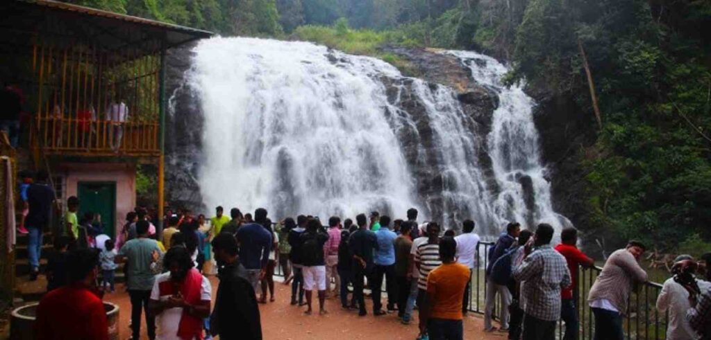

Popular Destinations

Abbey Falls
Enjoy beautiful waterfalls surrounded by greenery.
Raja's Seat
Experience breathtaking views of the Coorg hills.

Coffee Estates
Discover the aroma of Coorg coffee plantations.
Explore nature, waterfalls, coffee estates and the beauty of the Western Ghats.
Explore Destinations
Enjoy beautiful waterfalls surrounded by greenery.
Experience breathtaking views of the Coorg hills.
Discover the aroma of Coorg coffee plantations.
Coorg, also known as Kodagu, is one of the most beautiful hill destinations in Karnataka. Famous for coffee plantations, misty mountains, waterfalls and rich culture, Coorg offers a memorable experience for every traveller.
Preserving coorg culture through AI